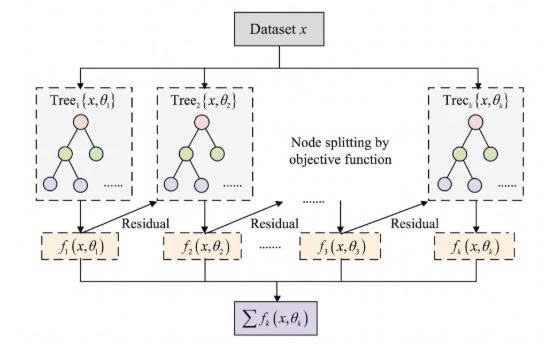

I. Định nghĩa XGBoost
XGBoost (Extreme Gradient Boosting) là thư viện học máy mã nguồn mở triển khai thuật toán Gradient Boosting với các cải tiến về hiệu năng, độ chính xác và khả năng xử lý dữ liệu lớn. XGBoost hỗ trợ cả hai dạng bài toán: hồi quy (regression) và phân loại (classification), thông qua các hàm mất mát và tham số tương ứng.

II. Nguyên lý hoạt động chung
XGBoost xây dựng tuần tự các cây quyết định (CART) để dự đoán phần dư (residual) của các cây trước, kết hợp với learning rate nhằm kiểm soát tốc độ học. Mỗi cây mới được tối ưu dựa trên gradient (đạo hàm bậc nhất) và hessian (đạo hàm bậc hai) của hàm mất mát, giúp hội tụ nhanh hơn các phiên bản GBDT thuần.
Dự đoán cuối cùng là tổng có trọng số của tất cả các cây:
với \(\eta\) là learning rate, \(f_k\) là cây thứ \(k\).
III. Toán học cốt lõi
Hàm mục tiêu của XGBoost tại vòng lặp thứ \(t\) là:
Khai triển Taylor bậc hai quanh \(\hat{y}_i^{(t-1)}\):
với \(g_i = \partial_{\hat{y}} l(y_i, \hat{y})\), \(h_i = \partial^2_{\hat{y}} l(y_i, \hat{y})\).
Thành phần điều chuẩn cho một cây \(f\):
Trong đó \(T\) là số lá, \(w_j\) là trọng số tại lá \(j\).
IV. XGBoost cho bài toán Hồi quy (Regression)
XGBoost rất hiệu quả cho các bài toán hồi quy, nơi mục tiêu là dự đoán một giá trị liên tục. Mô hình được huấn luyện để tối thiểu hóa sai số giữa dự đoán và giá trị thực tế (thường dùng MSE hoặc MAE). Cơ chế boosting xây dựng các cây nhỏ, mỗi cây tập trung “sửa chữa” phần sai số của các cây trước.
Bước 1: Khởi tạo
Khởi tạo giá trị dự đoán \(f_0\) cho toàn bộ tập huấn luyện bằng giá trị trung bình của biến mục tiêu \(Y\). Đây là dự đoán ban đầu cho mọi mẫu.
Bước 2: Tính Similarity Score của root
- Sum of Residuals: \(\sum (Y - f_0)\) – tổng các sai số (residual) tại node hiện tại.
- Number of Residuals: Số lượng mẫu (còn gọi là \(n\) hoặc \(|node|\)) trong node.
- \(\lambda\): Tham số regularization (giảm overfitting).
Bước 3: Chọn điều kiện root và tính Similarity Score cho node con
Xét từng điểm split (có thể lấy trung bình hai giá trị liền kề của thuộc tính). Với mỗi split, chia tập dữ liệu thành nhánh trái và phải, sau đó tính Similarity Score cho từng nhánh theo công thức ở bước 2 (áp dụng trên tập con tương ứng).
Bước 4: Tính Gain và chọn split tốt nhất
Chọn điều kiện split có Gain lớn nhất. Nếu Gain ≤ 0, không nên chia nhánh (cắt tỉa sớm).
Bước 5: Lặp lại và tính Output cho node lá
Quá trình chia nhánh được lặp lại cho đến khi đạt độ sâu tối đa hoặc không thể tăng Gain. Sau khi xây dựng xong cây, giá trị Output tại mỗi lá được tính theo công thức:
Output này thể hiện mức điều chỉnh cần cộng thêm cho các mẫu rơi vào lá đó.
Bước 6: Cập nhật dự đoán và tiếp tục lặp
Dự đoán mới cho mỗi mẫu được cập nhật bằng công thức:
Trong đó \(\eta\) là learning rate. Sau khi cập nhật, giá trị dự đoán mới này trở thành \(f_0\) cho vòng lặp tiếp theo. Quá trình từ bước 2 đến bước 6 được lặp lại cho mỗi cây cho đến khi đạt số cây mong muốn hoặc early stopping.
📌 Ví dụ nhanh (Python) – Hồi quy:
import xgboost as xgb
from sklearn.datasets import make_regression
from sklearn.model_selection import train_test_split
from sklearn.metrics import mean_squared_error
X, y = make_regression(n_samples=1000, n_features=10, noise=0.1)
X_train, X_test, y_train, y_test = train_test_split(X, y, test_size=0.2)
model = xgb.XGBRegressor(objective='reg:squarederror',
n_estimators=100,
learning_rate=0.1,
max_depth=5,
subsample=0.8,
colsample_bytree=0.8)
model.fit(X_train, y_train)
y_pred = model.predict(X_test)
print("MSE:", mean_squared_error(y_test, y_pred))V. XGBoost cho bài toán Phân loại (Classification)
Trong bài toán phân loại, XGBoost giúp dự đoán xác suất mà một mẫu dữ liệu thuộc về một nhóm nào đó. Cụ thể, nó sẽ tính toán xác suất mẫu đó thuộc về lớp 1 hay lớp 0 (phân loại nhị phân). Sau khi có xác suất này, chúng ta sẽ so sánh nó với một ngưỡng (thường là 0.5 cho phân loại nhị phân). Nếu xác suất cao hơn 0.5, mẫu dữ liệu sẽ được phân loại vào lớp 1, còn nếu xác suất nhỏ hơn hoặc bằng 0.5, mẫu sẽ được phân loại vào lớp 0.
Bước 1: Khởi tạo giá trị dự đoán ban đầu (\(f_0\))
Ban đầu, XGBoost khởi tạo một giá trị dự đoán \(f_0\) cho tất cả các mẫu trong bộ dữ liệu. Đối với bài toán phân loại nhị phân, giá trị này thường là 0.5 (xác suất trung lập). Việc khởi tạo này giúp mô hình bắt đầu với một "điểm xuất phát" trung lập, không nghiêng về lớp nào.
Bước 2: Tính toán Similarity Score của root
- Sum of Residuals: tổng các sai số giữa giá trị thực tế và giá trị dự đoán của mẫu (\(y - \hat{y}\)).
- Previous Probability: xác suất dự đoán của mô hình trước khi huấn luyện cây mới (với phân loại nhị phân, đây là xác suất mẫu thuộc lớp 1).
- \(\lambda\) (lambda): tham số điều chỉnh (regularization).
Bước 3: Chọn điều kiện split và tính Similarity Score cho các node con
Có nhiều cách chọn điều kiện phân tách (split), cách cơ bản nhất là lấy trung bình của hai giá trị liền kề của một thuộc tính số (hoặc xét từng giá trị đối với thuộc tính phân loại). Sau đó, tính Similarity Score cho node con bên trái và bên phải (hoặc nhiều nhánh) theo cùng công thức trên.
Bước 4: Tính Gain cho từng điều kiện split và chọn best split
XGBoost sẽ chọn điều kiện split có Gain lớn nhất, tức là phân tách mang lại sự cải thiện nhiều nhất.
Bước 5: Xây dựng cây và tính Output cho mỗi lá
Đây là giá trị giúp điều chỉnh dự đoán của mô hình tại mỗi bước.
Giá trị Output này thường được nhân với learning rate để kiểm soát bước cập nhật.
Bước 6: Cập nhật dự đoán và tính xác suất cuối cùng
Quá trình từ bước 2 đến bước 6 được lặp lại cho mỗi cây tiếp theo. Sau khi xây dựng toàn bộ các cây, mô hình đưa ra quyết định phân loại dựa trên xác suất cuối cùng (nếu xác suất ≥ 0.5 thì thuộc lớp 1, ngược lại lớp 0).
📌 Lưu ý về các công thức
- Similarity Score và Output được tính riêng cho từng node; mẫu số có thể hiểu là tổng trọng số Hessian (với logistic loss, Hessian = p*(1-p)).
- Tham số \(\lambda\) trong Similarity Score giúp ổn định và chống overfitting.
- Việc tính toán như trên là cách hiểu đơn giản; trong thực tế XGBoost tối ưu bằng đạo hàm bậc hai và sử dụng các kỹ thuật xấp xỉ histogram để tăng tốc.
📌 Ví dụ nhanh (Python) – Phân loại:
import xgboost as xgb
from sklearn.datasets import load_breast_cancer
from sklearn.model_selection import train_test_split
from sklearn.metrics import accuracy_score
data = load_breast_cancer()
X, y = data.data, data.target
X_train, X_test, y_train, y_test = train_test_split(X, y, test_size=0.2)
model = xgb.XGBClassifier(objective='binary:logistic',
n_estimators=100,
learning_rate=0.1,
max_depth=3,
subsample=0.8)
model.fit(X_train, y_train)
y_pred = model.predict(X_test)
print("Accuracy:", accuracy_score(y_test, y_pred))VI. Các tham số quan trọng
n_estimators: Số cây (thường 100–1000, kết hợp early stopping).learning_rate (eta): Tốc độ học (0.01–0.3). Giảm learning rate → cần nhiều cây hơn.max_depth: Độ sâu tối đa (3–10).min_child_weight: Tổng hessian tối thiểu để tạo node con.subsample: Tỉ lệ mẫu dùng cho mỗi cây (0.5–1).colsample_bytree: Tỉ lệ đặc trưng dùng cho mỗi cây.gamma (min_split_loss): Ngưỡng giảm loss tối thiểu để phân tách.reg_lambda (L2),reg_alpha (L1): Điều chuẩn.early_stopping_rounds: Dừng sớm khi validation không cải thiện.
VII. Kết luận
XGBoost là một thuật toán mạnh mẽ, linh hoạt, hỗ trợ cả hồi quy và phân loại với nhiều hàm mục tiêu khác nhau. Nhờ sự kết hợp giữa gradient boosting, regularization, và tối ưu hóa hiệu suất, XGBoost xứng đáng là lựa chọn hàng đầu cho các bài toán với dữ liệu dạng bảng. Tuy nhiên, cần đầu tư thời gian tinh chỉnh siêu tham số để tránh overfitting và đạt kết quả tốt nhất.